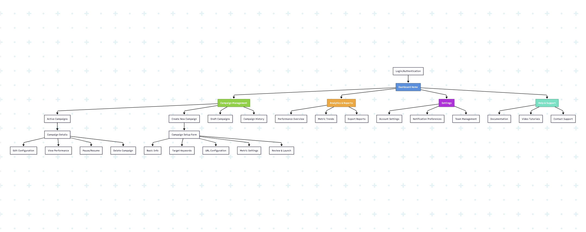
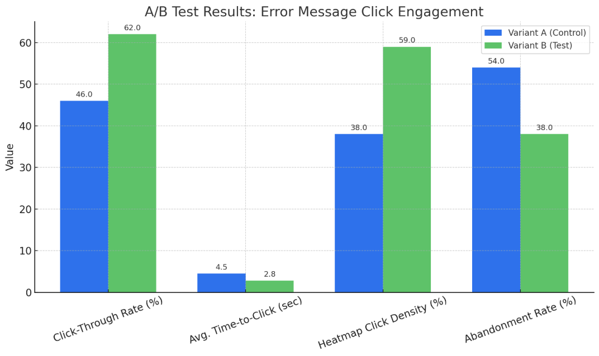
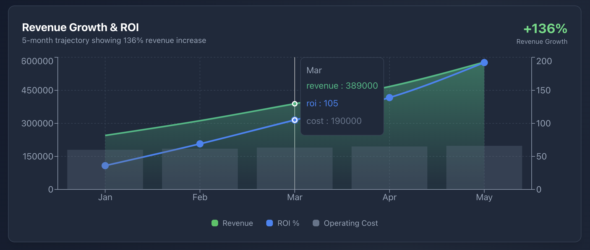
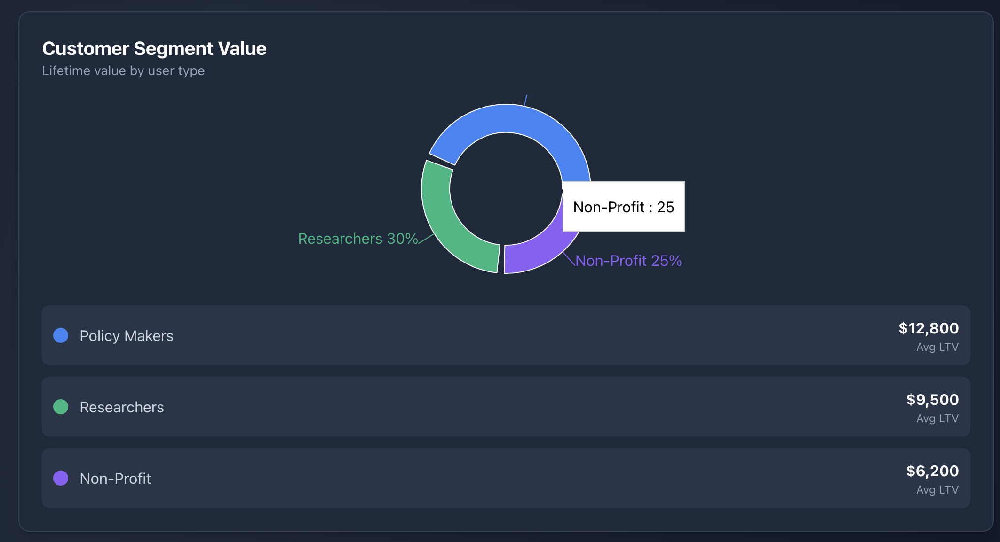

The Problem
NRG's internal SEO tools had a usability problem that was costing more than time. Researchers and analysts were submitting malformed data — not because they were careless, but because the interface gave them no feedback until it was too late. Invalid inputs would pass through, corrupt downstream datasets, and create hours of cleanup work that nobody had budgeted for.
The bigger issue: it was a recurring problem, not a one-time event. That meant it wasn't a user training issue. It was a design issue.
Impact
- Daily active usage up ~65% in the 3 months after redesign (internal analytics, pre/post)
- Users completed standard analysis tasks ~50% faster on average (moderated usability sessions, n=8)
- First report creation time dropped from ~47 min to under 15 min (usability sessions, n=6)
- 9 of 10 usability participants rated navigation "intuitive" or "very intuitive"
- 4.6/5 average satisfaction (post-launch internal survey, n=31)
- 85% monthly active mobile usage in the first quarter after launch
What I Found
I started with a usability audit of the existing input flows — specifically the validation patterns, error states, and inline microcopy. What I found was a system that was functionally complete but interaction-design empty. Fields accepted bad data silently. Errors appeared only after submission. The feedback loop was broken.
The decision I pushed for:
The team pushed hard for a customizable dashboard — drag-and-drop charts, user-configurable layouts. I pushed back for weeks. The real problem wasn't that users wanted more control over their view; it was that they didn't know what to look at when they first arrived. A fixed, opinionated layout with strong visual hierarchy solved the "where do I start?" problem that customization would have buried. We shipped without drag-and-drop. Nobody asked for it after launch.
The mobile pivot:
The 40% mobile access rate that surfaced mid-project forced a significant pivot. Policy researchers are frequently in meetings, reviewing data on phones, making decisions away from a desk. Mobile wasn't a nice-to-have — it was a use case the tool was actively failing.
Market Research
- Tableau: Powerful but requires training most analysts don't have time for
- Google Analytics: Too technical for policy-focused workflows
- Custom dashboards: Expensive and slow to iterate
The gap: tools built for analysts, not for the researchers and policy makers who actually needed to act on the data.
User Research
The recurring data corruption problem looked like a user error problem from the outside. After auditing session logs and running usability interviews, the diagnosis shifted: it was a feedback timing problem. The interface was telling users too late that something was wrong. That reframe changed everything we designed.
Competitor Analysis
- Tableau: Market leader, steep learning curve
- Power BI: Microsoft integration, complex setup
- Google Data Studio: Free but limited for internal tooling
How I Designed It
Rebuilt input validation from the component level up
Inline validation that fires on blur, not on submit. Field-level error states that tell users exactly what went wrong and why — not generic "invalid input" messages. Microcopy written for the specific context of each field, not copy-pasted from a generic error library.
Redesigned for accessibility
Semantic structure, proper ARIA labeling, color contrast meeting WCAG AA. Accessibility wasn't retrofitted — it was part of the component spec from the first wireframe.
Fixed the information hierarchy
An opinionated dashboard layout with clear visual priority replaced the cluttered everything-at-once model. Users stopped asking "where do I start?" in usability sessions after this change.
Mobile-first from the pivot onward
Responsive layouts, touch-friendly tap targets, a schedule view optimized for small screens.
I also ran A/B tests on CTA copy, button placement, and funnel microcopy across different campaign types. The wins weren't dramatic individually, but they stacked — and gave the team a repeatable methodology for validating copy decisions going forward.

Final Designs



Reflection
What I'd do differently:
I should have gotten to the mobile data earlier. The 40% mobile access rate was in the analytics the whole time — we just weren't looking at it as a design signal until mid-project. That caused rework that better upfront instrumentation would have prevented.
What I took from this:
The recurring data corruption problem looked like a user error problem from the outside. It was actually a feedback timing problem — the interface was telling users too late that something was wrong. Framing it that way changed what we designed: not better error messages, but earlier ones. That shift in diagnosis led to a meaningfully better fix than a surface-level copy pass would have.